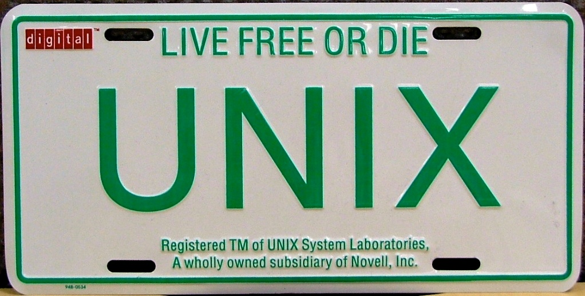

######### ######### ########### ######### ########## ########### ########### ########## # #
# # # # # # # # # # # # #
# # # # # # # # # # # # #
######### ##### # ######### # # ###### # ##### # #########
# # # # # # # # # # # # #
# # # # # # # # # # # # #
# # ######### # # # ########## # ########### ########## # #
## ## ## ## ## ## ## ## ## ## ## ## ## ## ## ## ## ## ## ## ## ## ## ## ## ## ## ## ## ## ## ## ## #### ## ## ## ########## ## ## ## ## ##

Kevin Thompson si Dennis Ritchie
Dezvoltatorii primei versiuni UNIX
Dezvoltatorii primei versiuni UNIX
UNIX® este un sistem de operare inițiat de un grup de programatori de la ATT Bell Labs, printre care Ken Thompson, Dennis Ritchie, Brian Kernighan, Douglas McIlroy și Joe Ossanna. Astăzi există mai multe variante ale sistemului, acestea fiind dezvoltate atât de firme comerciale cât și de indivizi și organizații non-profit (precum Free Software Foundation).
Sistemul de operare Unix este folosit pe scară largă atât pentru servere cât și pentru stații de lucru. Mediul de dezvoltare Unix și modelul de programare client-server au fost esențiale în dezvoltarea Internetului și trecerea de la sistemele de calculatoare individuale la sistemele de calculatoare în rețea. Atât Unix-ul cât și limbajul de programare C au fost dezvoltate de AT&T și distribuite guvernului și instituțiilor academice, ceea ce a dus la portarea lor pe un număr mai mare de calculatoare diferite decât orice alt sistem de operare. Astfel, UNIX-ul a devenit în informatică sinonim cu noțiunea de sistem deschis (open system).
Sistemul de operare UNIX a fost conceput de la bun început ca portabil, multi-user și multi-tasking, și este caracterizat de următoarele concepte informatice de bază: datele sunt stocate în format text simplu într-un sistem de fișiere ierarhic; dispozitivele și toate elementele IPC (inter-process communication) sunt văzute ca fișiere; se folosește pe larg linia de comandă; în loc de programe monolitice masive se preferă programe simple care au o singură funcție, aceste programe fiind cascadate folosind facilitatea pipe pentru a obține funcționalitatea dorită.
Sistemul UNIX constă din totalitatea acestor programe și a unui program master care controlează sistemul. Acest program poartă numele de nucleu sau kernel și oferă servicii precum: pornirea și oprirea altor programe; accesul la sistemul de fișiere; gestionarea resurselor și dispozitivelor hardware, etc.
Sistemele de operare bazate pe UNIX sau derivate din acesta urmeaza urmatoarea structura de fisiere:
Pentru mai multe informatii se pot consulta urmatoarele pagini :
Sistemul de operare Unix este folosit pe scară largă atât pentru servere cât și pentru stații de lucru. Mediul de dezvoltare Unix și modelul de programare client-server au fost esențiale în dezvoltarea Internetului și trecerea de la sistemele de calculatoare individuale la sistemele de calculatoare în rețea. Atât Unix-ul cât și limbajul de programare C au fost dezvoltate de AT&T și distribuite guvernului și instituțiilor academice, ceea ce a dus la portarea lor pe un număr mai mare de calculatoare diferite decât orice alt sistem de operare. Astfel, UNIX-ul a devenit în informatică sinonim cu noțiunea de sistem deschis (open system).

Material promotional UNIX de la Digital Equipment Corporation
Sistemul de operare UNIX a fost conceput de la bun început ca portabil, multi-user și multi-tasking, și este caracterizat de următoarele concepte informatice de bază: datele sunt stocate în format text simplu într-un sistem de fișiere ierarhic; dispozitivele și toate elementele IPC (inter-process communication) sunt văzute ca fișiere; se folosește pe larg linia de comandă; în loc de programe monolitice masive se preferă programe simple care au o singură funcție, aceste programe fiind cascadate folosind facilitatea pipe pentru a obține funcționalitatea dorită.
Sistemul UNIX constă din totalitatea acestor programe și a unui program master care controlează sistemul. Acest program poartă numele de nucleu sau kernel și oferă servicii precum: pornirea și oprirea altor programe; accesul la sistemul de fișiere; gestionarea resurselor și dispozitivelor hardware, etc.
Sistemele de operare bazate pe UNIX sau derivate din acesta urmeaza urmatoarea structura de fisiere:
| Dosar | Descriere |
|---|---|
| / | root (radacina sistemului de fisiere) |
| /bin | sunt stochate fiserele binare pentru programe si utilitare de sistem (top, ls, cd, etc) |
| /boot | contine fisierele necesare pentru bootarea sistemului (bootloader,grub, etc) |
| /dev | prescurtat de la devices, contine fisiere ce reprezinta perifericele conctate la calculator |
| /etc | contine fisiere de configuratie a sistemului si baze de date, prescurtare de la 'et cetera' |
| /home | contine directoare de lucru pentru fiecare utilizator |
| /lib | contine librariile importante pentru compilarea (in general librarii C) programelor sau uneori a modulelor de kernel |
| /media | director pentru 'montarea' dispozitivelor de stocare externe (DVD-uri, stickuri, etc) |
| /mnt | folosit pentru creearea de puncte de montare temporare |
| /root | directorul "superuserului" |
| /sys | contine date despre sistemul de operare si componentele hardware ale calculatorului |
| /usr | contine programe ce nu sunt critice pentru sistem |
| /var | folosit la stocarea logurilor sau a fisierelor temporare(lista de sarcini pentru imprimanta, emailuri, etc.) |